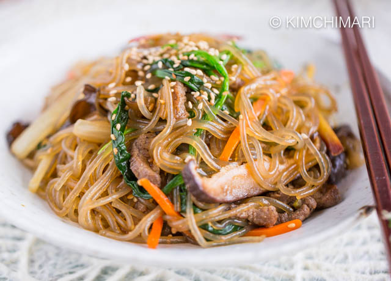
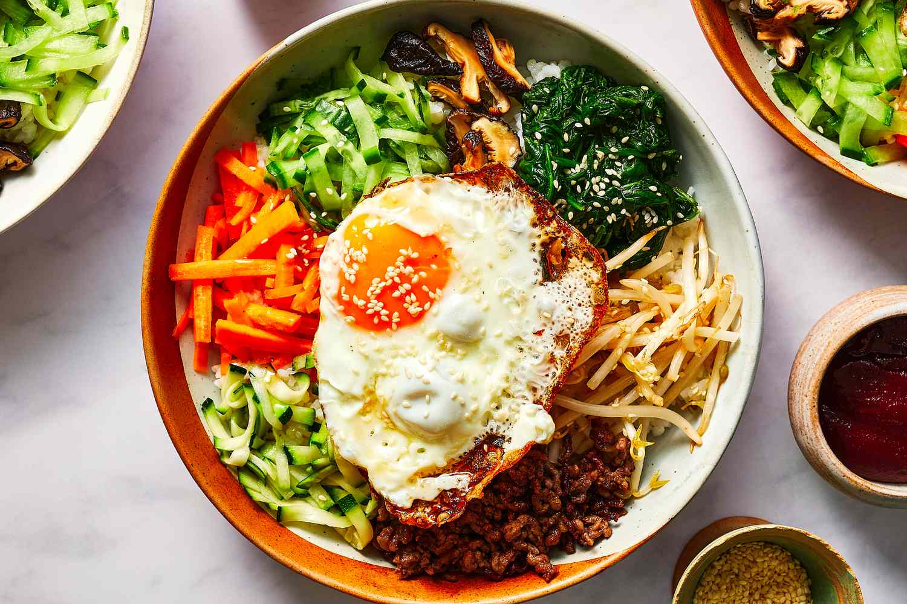
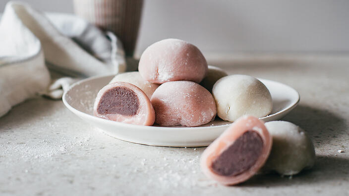

Japchae

Ingredients
- 8 oz Korean glass noodles (dangmyeon)
- 6 oz beef sirloin, or pork loin. See note below for the vegan/vegetarian option
- 2 tbsp oil
- 1 medium onion, thinly sliced
- 1 medium carrot, cut into thin matchsticks
- 1 small red bell pepper, thinly sliced
- a few pinches salt
- 5-6 shiitake mushrooms, sliced
- 1 bunch (about 6 oz) spinach, cleaned
- 1 tbsp sesame oil
- 1 tbsp toasted sesame seeds
FOR BEEF SEASONING
- 1 tbsp soy sauce
- 1 tsp sugar
- 1 tbsp sweet rice wine (mirim)
FOR JAPCHAE SAUCE
- 4 tbsp soy sauce
- 1/2 cup water
- 2-3 tbsp sugar
- 2 tbsp sweet rice wine (mirim)
- 1 tbsp oil
- 2 cloves garlic, minced
- 1/2 tbsp black pepper
How to cook
- Soak the glass noodles in hot water for 15 minutes, then drain and set aside. Pre-soaking will soften the noodles and make them easier to cook.
- Slice beef (or pork) into thin match sticks (about 1/4-inch thick) against grain and season with soy sauce, sugar, and sweet rice wine; set aside.
- In a mixing bowl, combine all the japchae sauce ingredients, and set aside.
- Heat 1 tablespoon oil in a large skillet or wok over medium high heat. Add onion, carrot, pepper, and a pinch of salt; stir-fry until soft. Add sliced shiitake mushrooms and another pinch of salt. Continue to stir-fry until soft. Add more oil if needed.
- Add spinach at the end and stir-fry until spinach is wilted. Remove the skillet from the heat and transfer the vegetables to a large plate to cool.
- Reheat the pan over high heat with the remaining 1 tablespoon oil, add the beef (or pork) and stir-fry until fully cooked. You will see the juice coming out from the meat. Transfer the meat to the large plate with the reserved vegetables, reserving the juice in the pan.
- Add the drained glass noodles to the pan with the meat juices. Pour the japchae sauce over the noodles and toss to combine. Let the noodles cook over medium heat until they are soft and the sauce liquid is mostly absorbed into the noodles, about 3-4 minutes.
- Reduce the heat to low. Add the vegetables and meat back to the pan over the noodles. Add sesame oil and sesame seeds and toss all together to incorporate. Drizzle more sesame oil if you wish. Taste and season more according to your taste.
Beef Bulgogi

Ingredients
- 2 lb beef sirloin or rib eye , thinly sliced, about 1/8-inch thick
- 1 Asian leek or 3 green onion, sliced
BULGOGI MARINADE
- 1/2 large Asian pear , peeled and diced
- 1/4-1/2 kiwi, peeled and diced. See note below
- 1/2 large onion , diced
- 4 cloves garlic
- 5 tbsp soy sauce
- 1 tbsp Korean soup soy sauce (gukganjang)
- 2 tbsp Korean plum extract (maeshil cheong), optional
- 2 tbsp light brown sugar
- 2 tbsp sweet rice wine (mirim)
- 2 tsp black pepper
- 1 tbsp sesame oil
- 2 tsp toasted sesame seeds
How to Cook
- To make bulgogi marinade, put pear, kiwi, onion, and garlic in a blender and process until very smooth.
- Pour the onion/fruit puree into a large shallow pan – a 9×13-inch pyrex baking pan (with lid) is perfect for this. Add soy sauce, Koran soup soy sauce, Korean plum extract (if using), brown sugar, rice wine, pepper and sesame oil; mix well. You can make this marinade sauce ahead of time and keep it in the refrigerator for up to 1 week.
- Dab the beef with a paper towel to remove extra myoglobin from the surface. Separate the beef slices and add them to the marinade sauce. Toss gently by hand to combine everything with a slight massaging motion. Cover and marinate for at least 1 hour or up to overnight.
- Heat a skillet very hot over high heat. Do not add any oil! Add the beef. You can add sliced Asian leek on top, or green onion. You can also add thinly sliced carrot, or pepper if you want it to be more wholesome.
- The beef should sizzle as soon as it touches the hot skillet. Let the meat cook in its own juice. Toss the meat around to cook evenly and thoroughly, about 2-3 minutes. It should cook very quickly. Sprinkle with sesame seeds and green onion to garnish. Serve warm with rice and a vegetable side dish.
Doenjang Jjigae
Ingredients
FOR ANCHOVY STOCK
- 2 cups rice water, see note below
- 5 large dried anchovy, deveined
- 1 piece dried sea kelp (dashima)
FOR STEW
- 2 heaping tbsp Korean soybean paste (doenjang)
- 1 tsp Korean chili paste (gochujang)
- 1/2 small onion, chopped
- 1 small zucchini, diced
- 4 oz soft tofu, diced
- 2 oz mushroom, optional
- 1 clove garlic, finely minced
- 1 tsp Korean chili flakes (gochugaru)
- 1 fresh chili, sliced
- 1 green onion, finely chopped
EQUIPMENT
- 1 qt stone pot
- mini scoop strainer
How to cook
- To make the anchovy stock, combine rice starch water, dried anchovy, and sea kelp in a stone pot or heavy bottom pot and bring to boil. Reduce the heat to low and simmer for 3-4 minutes. Discard the anchovies and sea kelp.
- To make the stew, smear the pastes in a mini scoop strainer or slotted spoon and incorporate into the stock. Add the onion and bring to a gentle boil over medium heat.
- Add zucchini, tofu, and mushroom; continue to boil over medium-low heat for 1-2 minutes.
- Add garlic, chili flakes, and fresh chili and heat through. Sprinkle green onion and remove from heat. Serve hot with rice.
Kimbap

Ingredients
- 5 sheets of gim (seaweed paper), roasted slightly (sometimes called “nori” from Japanese)
- 4 cups cooked rice (the recipe is here, but make with 2 cups of short grain rice instead of 1 cup)
- ½ pound beef skirt steak (or tenderloin, or ground beef)
- 1 large carrot, cut into matchsticks (about 1½ cup)
- 5 strips of yellow pickled radish (use pre-cut danmuji or cut into 8 inch long strips)
- 8 to 10 ounces spinach (1 small bunch), blanched, rinsed in cold water, and strained
- 3 eggs
- 3 garlic cloves
- 2 teaspoons soy sauce
- 1 tablespoon plus 1 teaspoon brown (or white) sugar
- 1½ teaspoon kosher salt
- 2½ tablespoons toasted sesame oil
- vegetable oil
How to Cook
- Place freshly made rice in a large, shallow bowl. Gently mix in ½ teaspoon kosher salt and 2 teaspoons toasted sesame oil over top with a rice scoop or a wooden spoon.
- Let it cool down enough so it’s no longer steaming. Cover and set aside.
- Combine the blanched spinach, 2 minced garlic cloves, ½ teaspoon kosher salt, and 2 teaspoons toasted sesame oil in a bowl.
- Mix well by hand and put it on a large platter with the sliced yellow pickled radish.
- Combine the carrot matchsticks with ¼ teaspoon kosher salt. Mix well and let it sweat for 5 to 10 minutes. Heat a pan and add a few drops vegetable oil.
- Squeeze out excess water from the carrot, then saute for about 1 minute. Put it on the platter next to the spinach.
- Trim the fat from the skirt steaks and slice into ¼ inch wide, 3 to 5 inch strips. Put the strips into a bowl. Add 2 teaspoons soy sauce, 1 minced garlic clove, ¼ teaspoon ground black pepper,1 tablespoon plus 1 teaspoon brown (or white) sugar, and 2 teaspoons toasted sesame oil.
Mix well by hand.
- Set aside, and let them marinate while we do the egg strips.
- Crack 3 eggs in a bowl and add ¼ teaspoon kosher salt. Beat it with fork and remove the stringy chalaza.
- Drizzle a few drops of oil on a heated 10 to 12 inch non-stick pan. Wipe off the excess with a paper towel so only a thin sheen of oil remains. Turn down the heat to low and pour the egg mixture into the pan. Spread it into a large circle so it fills the pan.
- When the bottom of the egg is cooked, flip it over with a spatula. Remove from the heat and let it cook slowly in the hot pan for about 5 minutes, with the ultimate goal of keeping the egg as yellow as possible, and not brown.
- Cut it into ½ inch wide strips. Put it next to the spinach on the platter.
- Heat up a pan over medium high heat and cook the marinated beef, stirring it with a wooden spoon until well cooked.
- Set aside.
- Let’s roll gimbap!
- Place a sheet of gim on a bamboo mat with the shiny side down. Evenly spread about ¾ cup of cooked rice over top of it, leaving about 2 inches uncovered on one side of the gim.
- Place beef, carrot, yellow pickled radish strip, a few egg strips, and spinach in the center of the rice.
- Use both hands to roll the mat (along with gim and rice) over the fillings, so one edge of the rice and gim reaches the opposite edge. This centers the fillings in the roll, so they’ll be nicely in the middle when you slice it.
- Grab the mat with both hands and and press it tightly as you continue rolling the gimbap. Push out the mat as you roll, so it doesn’t get wrapped in the gimbap.
- Remove the roll from the mat at the end and set the finished roll aside with the seam down, to seal it nicely.
- Repeat 4 more times with the remaining ingredients.
- Put some toasted sesame oil on the finshed rolls and sprinkle some sesame seeds over top. Cut each roll into ¼ inch bite size pieces with a sharp knife, occasionally wiping it with a wet paper towel or cloth to clean the starch off and to ease cutting.
- Put it on a plate and serve immediately or pack it in a lunchbox.
Bibimbap

Ingredients
- 5 cups cooked short-grain rice
- 12 ounces soy bean sprouts, washed and drained
- 8 ounces of spinach blanched and washed with the excess water squeezed out by hand
- 1 large carrot
- 1 large red bell pepper
- 1 large zucchini
- 1 English cucumber
- 3 to 4 green onions, chopped
- ½ pound fresh lean cut of beef (fillet mignon, flank steak)
- 4 ounces fernbrake (gosari), fresh or soaked from ½ ounce dried gosari (details below)
- 1 ounce dried bellflower roots (doraji), soaked in cold water for 18 to 24 hours.
- 4 eggs
- kosher salt
- vegetable oil
- toasted sesame oil
- toasted sesame seeds
- garlic
- soy sauce
- honey (or sugar)
- Korean hot pepper paste (gochujang)
How to cook
- If you have presoaked or fresh fernbrake you can use it straight away, but if you have dried fernbrake you’ll need to get it ready to eat. It’s fast if you have a pressure cooker, but if you don’t it will take some time.
- Wash ½ ounce of dried gosari and boil it with 5 cups of water in a pressure cooker for 30 minutes.
- Drain and rinse in cold water a couple of times.
- Drain. It should make 4 ounces.
- In a large saucepan add ½ ounce of dried gosari to 7 cups of water. Bring to a boil over medium-high heat and boil for 30 minutes. Cover and let stand until cool, about 2 to 3 hours.
- Rinse the fernbrake a couple of times, drain and put in a bowl. Cover with fresh cold water and let soak for at least 8 hours or overnight in a cool place, changing the water 2 or 3 times during the soaking
- Taste the gosari: It should be soft. If it’s tough, boil it again in a fresh pot of water for about 20 minutes and then let it sit, covered, until soft.
- Drain. It should make 4 ounces.
- If you have a usual method for making rice or have a rice cooker, go ahead and make 5 cups of rice like you usually do. But here’s how I do it on a pot on the stove. 2 cups of dried rice makes about 5 cups of cooked rice.
- Rinse 2 cups of rice in cold water and scrub the wet rice with your hand. Rinse and drain until the drained water is pretty clear.
- Put the rice in a heavy-bottomed pot. Add 2 cups of water, cover, and soak for 30 minutes.
- Cook over medium high heat for 7 to 8 minutes until the surface is covered with abundant bubbles that are spluttering noisily and look like they’re about to overflow the pot. Turn the rice over a few times with a spoon and cover the pot again.
- Turn the heat to very low and simmer for another 10 minutes until the rice is fully cooked and fluffy. Remove from the heat.
- Fluff the rice with a spoon to release excess steam. Let the rice stand, covered, at room temperature to keep it warm.
- I like to get a big platter and then put each vegetable on it as they’re ready. I think it looks really pretty, but you don’t have to do this. When all vegetables are prepared and ready to use, the platter looks pretty delicious!
- Put the soy bean sprouts in a pot and add 4 cups water and 2 or 3 teaspoons salt. Cover and cook for 20 minutes over medium high heat. Take out the sprouts with tongs and put them into a bowl, leaving about ½ cup of sprouts in the pot with the water you used to boil them. This is the soup to serve with bibimbap later.
- In a bowl, mix the sprouts by hand with ½ teaspoons salt, 1 teaspoon minced garlic, and 2 teaspoons toasted sesame oil. Put them on the large platter.
- Cut up the blanched spinach a few times and put it in a bowl. Mix by hand with 1 teaspoon garlic, 1 teaspoon toasted sesame oil, ½ teaspoon kosher salt, and 1 teaspoon sesame seeds. Cover and put it next to the soy bean sprouts on the platter.
- Cut the carrot into matchsticks, put them in a bowl, and mix with a pinch of salt. Let stand for 5 to 10 minutes until sweating.
- Cut the red bell pepper into halves, deseed, and slice into strips. Put them in a bowl.
- Cut the zucchini into matchsticks and mix with ½ teaspoon kosher salt.
- Cut the cucumber into halves lengthwise and slice thinly crosswise. Mix with ¼ teaspoon kosher salt.
- Cut the beef into matchsticks and put them in a bowl.
- Mix with 1 tablespoon minced garlic, 1 tablespoon soy sauce, 1 tablespoon honey, 2 teaspoons toasted sesame oil, and 1 teaspoon sesame seeds with a spoon.
- Cover and keep in the fridge until ready to use.
- Cut the fernbrake (gosari) a few times into bite size pieces. Set aside.
- Put the bellflower roots (doraji) in a large bowl. Add 1 or 2 tablespoons salt. Rub for a minute to wilt slightly and release some of the bitterness. Rinse them in cold water a couple of times and drain. If you find some roots are too thick, split them lengthwise. Set aside.
- Heat up a pan over medium high heat. Squeeze out excess water from the carrot. Add a few drops of cooking oil to the pan and sauté the carrot for 1 minute. Put it on the platter next to the soy bean sprouts and spinach. Clean the pan with wet paper towel or wash it.
- Heat a few drops of cooking oil in the pan and squeeze out the excess water from the cucumber. Sauté with ½ teaspoon minced garlic and a few drops of toasted sesame oil for 30 seconds. Put it on the platter. Clean the pan.
- Heat up the pan with a few drops of cooking oil. Add the red bell pepper and sprinkle a pinch of salt over top. Sauté for 30 seconds. Put it on the platter. Clean the pan.
- Heat up the pan and squeeze out excess water from the zucchini. Add a few drops of cooking oil and sauté with 1 teaspoon minced garlic, 1 tablespoon chopped green onion, a drop of toasted sesame oil for 1 minute until slightly softened. Put it on the platter. Clean the pan.
- Heat up the pan with a few drops of cooking oil. Add the bellflower roots and sauté for 2 to 3 minutes. Lower the heat to medium so as not to brown them. Add 1 teaspoon minced garlic and a drop of toasted sesame oil. Stir for another minute until a little softened. Put it on the platter. Clean the pan.
- Heat up the pan. Add a few drops of cooking oil. Stir the gosari for 2 minutes until a little softened. Add ½ teaspoon of minced garlic, 2 teaspoons soy sauce, and 2 teaspoons sugar, and keep stirring for another minute. Put it on the platter.
- Here are a couple of ways to serve: bibimbap in a regular, shallow bowl, and dolsot-bibimbap in a stone or earthenware bowl.
- In a regular, shallow bowl
- Reheat the soybean sprout soup.
- Divide the cooked rice into 4 portions. Each portion will be a little more than 1 cup of rice.
- Put the rice in each of 4 bowls and arrange the vegetables and beef on the rice. Top with a raw egg yolk and gochujang. If you prefer your eggs and beef cooked, use a fried egg sunny side up and slightly pan-fry the beef before putting them on the top of rice.
- Sprinkle the bibimbap with the sesame seeds and drizzle with sesame oil to taste.
- Ladle the soup to a small bowl and sprinkle some chopped green onion over top.
- Serve right away with more hot pepper paste on the side, and maybe kimchi too.
- Dolsot-bibimbap in a hot earthenware bowl (ttukbaegi) or hot stone bowl (dolsot)
- Reheat the soybean sprout soup.
- Put a few drops of toasted sesame oil in the bottom of each of 4 earthenware bowls. They should be big enough to hold 4 to 6 cups each.
- Divide the rice among the bowls. Arrange the vegetables and beef on the rice. Top each serving with a raw egg yolk and 1 tablespoon gochujang. If you prefer your eggs and beef cooked, use a fried egg sunny side up and slightly pan-fry the beef before putting them on the top of rice.
- Set each pot on a burner. Heat over medium high heat until you hear a ticking, crackling sound coming from the rice.
- Sprinkle the bibimbap with the sesame seeds, drizzle with sesame oil to taste.
- Ladle the soup to a small bowl and sprinkle some chopped green onion over top.
- Serve right away with more hot pepper paste on the side and maybe kimchi too.
Korean Traditional Desserts
Patbingsu
Ingredients
- 400 g / 0.9 pounds ice cubes
- 2 Tbsp sweet red bean paste (or more to taste)
- 2 Tbsp sweetened condensed milk (or more to taste)
- 16 mini sweet rice cakes (mochi)
- 80 g / 2.8 ounces strawberry, chopped
- 45 g / 1.6 ounces kiwi, thinly sliced
- 45 g / 1.6 ounces blueberry
- 45 g / 1.6 ounces pineapple, chopped
- *Other popular toppings – A scoop of ice cream, breakfast cereal (e.g. cornflakes), green tea powder, Korean roasted grains, mango, banana, jellies. The list goes on and on.
- **1 Tbsp = 15 ml
How to make
- Put the ice blocks into a food processor (or shaved ice machine if you have one). Grind the ice (for about 20 seconds) until it has a smooth texture.
- Place the shaved ice into a chilled serving bowl. Top up with your choice of fruit, red bean paste, mochi. Garnish with sweetened condensed milk.
Dalgona
Ingredients
- For each candy
- 1.5 tablespoons sugar (white or brown)
- 1/16 teaspoon baking soda (about 2 to 3 small pinches)
How to make
- Gather all the ingredients and tools before starting.
- Add 1.5 tablespoons of sugar to the ladle. Hold the ladle over low to medium low heat. When the sugar starts to melt around the edges, stir with a chopstick.
- Continue to stir constantly, controlling the heat. If it starts to smoke, raise the ladle a few inches above the heat, and lower it closer once it cools off a little. Repeat as necessary until the sugar completely melts without any lumps, but let it cool off a little before adding the baking soda.
- Holding the ladle away from the heat, stir in the baking soda.
- Stir quickly and vigorously (20 to 25 times) until the baking soda is completely dissolved and the frothy mixture turns light caramel-color. While stirring, you can bring the ladle closer to the heat for a short second or two to keep it warm, but don’t let it puff up too long. It will burn at the bottom
- Pour the mixture onto a non-stick baking sheet, skillet, or parchment paper, scraping with a rubber spatula. Place the tip of the optional lollipop stick into the mixture.
- Let it cool for 15 to 20 seconds. Then, lightly tap it to see if it doesn't stick, and then press it all the way (for 4 to 5 seconds) to the desired thickness. This helps prevent the dalgona from sticking to the press.
- Immediately, stamp it with a cookie cutter, firmly but not all the way through. Promptly remove the cutter.
Chappssaltteok(Read Bean Mochi)

Ingredients
- 3/4 cup sweet rice flour / mochiko / glutinous rice flour (100g / 3.5 ounces)
- 1/4 cup castor sugar (60g / 2.1 ounces)
- A pinch fine sea salt
- 1/2 cup water (120g / 4.2 ounces)
- 3/4 cup sweetened red bean paste (180g / 6.3 ounces), shaped into 6 balls
- 3 Tbsp corn starch or potato starch (25g / 0.9 ounces)
How to make
- Combine the sweet rice flour, sugar and salt in a microwave safe mixing bowl. Whisk it well. Add the water and mix them well.
- Cover the bowl with cling wrap leaving a little gap for steam to escape. Put the bowl into a microwave and heat it up for about 1 min (based on 1250W).
- Take the bowl out and stir the mixture around with a wooden spoon or spatula.
- Return the bowl, covered again, into the microwave and heat it up for a further 1 mins. (The cooking time can vary depending on your microwave. If the desired consistency is not yet achieved, cook it for a little bit longer.)
- Remove the bowl from the microwave.
- With a wooden spoon/spatula, mix and massage around the rice cake mixture until it cools down enough to touch (about 5 mins).
- Lightly scatter the corn starch on the board. (This is for anti-sticking purpose.) Carefully remove the mochi mixture from the bowl and place it on the board. Knead it to one long dough while scattering the corn starch over it. Then, using a scraper, divide the dough into 6 pieces.
- Gently flatten and open up the dough on your palm (large enough to fit a ball of red bean paste) then place the red bean paste ball in the middle. Seal the rice cake by gathering the corners of the dough. Roll the mochi around on the corn starch and place it in a disposable baking cup facing the gathered point down. Repeat this step with the remaining ingredients.
- Serve at room temperature.